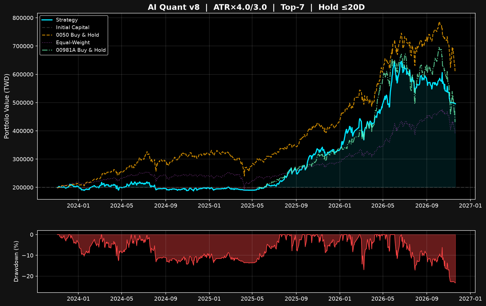

Event-Driven System | 報表日期: 2026-11-20 | 🛡️ ATR×4.0/3.0 🎯 Top-7 ⏱️ 最長 20 天 💰 成本: 買 0.143% + 賣 0.443%
信號基於昨日收盤產生，建議於明日開盤價附近掛單進場。 最晚出場日使用 XTAI 交易日曆計算
| 股票代號 | AI 評分 | 今日收盤 | 操作狀態 | 🎯 區間執行計畫 | 📊 歷史績效 | 🏛️ 籌碼 | 📰 新聞 |
|---|---|---|---|---|---|---|---|
| 2618 | 3.98 | 46.4 | 🟢 建議買進 #1 | 停利: 53.1 (+14.4%) 停損: 41.4 (-10.8%) 最晚出場: 2026-12-18 | 歷史 5筆 | 勝率 60% | 均報酬 +1.7% | 🟢 大買 +3.0% | ⚪ 中性 |
| 2412 | 3.95 | 166.0 | 🟢 建議買進 #2 | 停利: 181.9 (+9.6%) 停損: 154.1 (-7.2%) 最晚出場: 2026-12-18 | 歷史 2筆 | 勝率 100% | 均報酬 +1.6% | 🟡 小買 +1.0% | ⚪ 中性 |
| 1216 | 3.73 | 78.7 | 🟢 建議買進 #3 | 停利: 87.4 (+11.0%) 停損: 72.2 (-8.3%) 最晚出場: 2026-12-18 | 歷史 3筆 | 勝率 33% | 均報酬 -4.2% | 🟡 小買 +1.4% | ⚪ 中性 |
| 2891 | 3.70 | 73.1 | 🟢 建議買進 #4 | 停利: 85.7 (+17.2%) 停損: 63.6 (-12.9%) 最晚出場: 2026-12-18 | 歷史 5筆 | 勝率 80% | 均報酬 +0.3% | ⚪ 無資料 +0.0% | ⚪ 中性 |
| 2886 | 3.67 | 53.4 | 🟢 建議買進 #5 | 停利: 61.5 (+15.2%) 停損: 47.3 (-11.4%) 最晚出場: 2026-12-18 | 歷史資料不足 | 🟡 小買 +0.9% | ⚪ 中性 |
| 3045 | 3.57 | 127.5 | 🟢 建議買進 #6 | 停利: 141.1 (+10.7%) 停損: 117.3 (-8.0%) 最晚出場: 2026-12-18 | 歷史 3筆 | 勝率 33% | 均報酬 -0.1% | 🟡 小買 +1.3% | ⚪ 中性 |
| 2892 | 3.45 | 40.2 | 🟢 建議買進 #7 | 停利: 46.2 (+15.1%) 停損: 35.6 (-11.3%) 最晚出場: 2026-12-18 | 歷史資料不足 | ⚪ 無資料 +0.0% | ⚪ 中性 |
| 6446 | 3.72 | 1205.0 | ⚪ 觀望 (低於 MA) | - | - | - | - |
| 3661 | 3.68 | 3600.0 | ⚪ 觀望 (低於 MA) | - | - | - | - |
| 2603 | 3.48 | 247.0 | ⚪ 觀望 (低於 MA) | - | - | - | - |
| 2379 | 3.37 | 726.0 | ⚪ 觀望 (低於 MA) | - | - | - | - |
| 2881 | 3.30 | 148.0 | ⚪ 觀望 (低於 MA) | - | - | - | - |
近 20 日三大法人（外資+投信+自營商）持股比重變化排名。Data: tw-institutional-stocker
| # | 股票 | 變化 | 持股 | 幅度 |
|---|---|---|---|---|
| 1 | 4916 事欣科 | +15.6% | 19.8% | |
| 2 | 2465 麗臺 | +13.6% | 18.8% | |
| 3 | 4927 泰鼎-KY | +12.1% | 24.1% | |
| 4 | 4526 東台 | +11.6% | 17.2% | |
| 5 | 2355 敬鵬 | +10.3% | 26.5% | |
| 6 | 6510 精測 | +9.8% | 9.6% | |
| 7 | 1802 台玻 | +8.2% | 15.3% | |
| 8 | 2468 華經 | +8.0% | 10.4% | |
| 9 | 6456 GIS-KY | +7.3% | 54.6% | |
| 10 | 1528 恩德 | +7.2% | 10.0% | |
| 11 | 4720 德淵 | +7.2% | 12.3% | |
| 12 | 6209 今國光 | +6.5% | 9.1% | |
| 13 | 6108 競國 | +4.9% | 18.2% | |
| 14 | 3715 定穎投控 | +4.4% | 9.4% | |
| 15 | 9933 中鼎 | +4.4% | 24.5% |
| # | 股票 | 變化 | 持股 | 幅度 |
|---|---|---|---|---|
| 1 | 0053 元大科技市值 | -19.2% | -50.6% | |
| 2 | 4979 華星光 | -8.5% | 2.1% | |
| 3 | 8150 南茂 | -6.5% | 40.8% | |
| 4 | 6672 騰輝電子-KY | -6.0% | 30.5% | |
| 5 | 0050 元大台灣50 | -5.4% | -15.5% | |
| 6 | 3189 景碩 | -5.3% | 27.0% | |
| 7 | 6213 聯茂 | -5.1% | 19.3% | |
| 8 | 6834 天二科技 | -5.0% | 14.6% | |
| 9 | 2478 大毅 | -4.9% | 10.5% | |
| 10 | 0056 元大高股息 | -4.8% | -8.6% | |
| 11 | 3090 日電貿 | -4.5% | 8.8% | |
| 12 | 1312 國喬 | -4.5% | 2.4% | |
| 13 | 0055 元大MSCI金融 | -4.2% | -21.0% | |
| 14 | 2449 京元電子 | -4.0% | 16.9% | |
| 15 | 2327 國巨* | -3.9% | 46.3% |

判斷目前市場 regime 與近期趨勢，幫助你決定是否積極或保守操作。
歷史回撤事件的深度與持續時間，識別策略最脆弱的時期。
| # | 開始日 | 恢復日 | 最大深度 | 持續天數 |
|---|---|---|---|---|
| #1 | 2026-06-23 | 2026-11-20 | -23.2% | 150 天 |
| #2 | 2026-03-02 | 2026-04-08 | -17.0% | 37 天 |
| #3 | 2024-07-12 | 2025-07-17 | -14.8% | 370 天 |
| #4 | 2024-03-07 | 2024-05-28 | -12.6% | 82 天 |
| #5 | 2026-06-04 | 2026-06-22 | -11.6% | 18 天 |
近期表現是否仍在健康範圍內，偏離均值時需警惕。
連勝/連敗紀錄與近期走勢，評估策略是否處於熱手或冷卻期。
| 出場原因 | 次數 | 平均報酬 |
|---|---|---|
| 🟢 停利 | 209 筆 | +16.44% |
| ⚪ 時間到期 | 201 筆 | -0.31% |
| 🔴 停損 | 164 筆 | -13.20% |
每筆交易報酬的分布形狀，正偏態代表策略有良好的尾部收益。
| 報酬區間 | 筆數 | 佔比 | 分布 |
|---|---|---|---|
| < -15% | 47 | 8.2% | |
| -15~-10% | 91 | 15.9% | |
| -10~-5% | 72 | 12.5% | |
| -5~0% | 59 | 10.3% | |
| 0~5% | 61 | 10.6% | |
| 5~10% | 44 | 7.7% | |
| 10~20% | 151 | 26.3% | |
| > 20% | 49 | 8.5% |
哪些股票貢獻最多利潤、哪些持續虧損，幫助判讀信號品質。
| 股票 | 交易數 | 勝率 | 平均報酬 | 總貢獻 |
|---|---|---|---|---|
| 2344 | 16 | 81% | +11.8% | +188.8% |
| 3017 | 19 | 74% | +9.7% | +183.6% |
| 2383 | 15 | 80% | +11.6% | +174.5% |
| 2408 | 20 | 75% | +6.8% | +136.1% |
| 1519 | 19 | 63% | +5.9% | +112.6% |
| 1303 | 17 | 71% | +5.7% | +96.4% |
| 2360 | 10 | 60% | +8.5% | +85.2% |
| 6770 | 10 | 80% | +8.4% | +83.8% |
| 2404 | 17 | 71% | +4.6% | +78.7% |
| 2327 | 11 | 64% | +6.6% | +72.5% |
| 股票 | 交易數 | 勝率 | 平均報酬 | 總貢獻 |
|---|---|---|---|---|
| 1326 | 8 | 25% | -4.4% | -35.3% |
| 2379 | 4 | 0% | -9.0% | -36.0% |
| 2603 | 11 | 36% | -3.5% | -38.4% |
| 3481 | 11 | 27% | -5.3% | -58.3% |
| 1301 | 5 | 0% | -12.8% | -63.8% |
| 股票 | 進場日 | 出場日 | 進場價 | 出場價 | 觸發原因 | 持有天數 | 報酬率 |
|---|---|---|---|---|---|---|---|
| 2885 | 2026-11-10 | 2026-11-19 | 69.5 | 62.7 | 🔴 停損 | 7天 | -10.4% |
| 6446 | 2026-11-10 | 2026-11-19 | 1376.4 | 1186.6 | 🔴 停損 | 7天 | -14.4% |
| 4938 | 2026-11-10 | 2026-11-18 | 97.1 | 82.0 | 🔴 停損 | 6天 | -16.2% |
| 2884 | 2026-11-06 | 2026-11-18 | 46.5 | 42.9 | 🔴 停損 | 8天 | -8.2% |
| 1216 | 2026-11-05 | 2026-11-10 | 81.3 | 76.2 | 🔴 停損 | 3天 | -6.9% |
| 4938 | 2026-11-05 | 2026-11-06 | 100.6 | 88.0 | 🔴 停損 | 1天 | -13.1% |
| 2891 | 2026-11-04 | 2026-11-06 | 74.1 | 68.0 | 🔴 停損 | 2天 | -8.8% |
| 2603 | 2026-11-03 | 2026-11-06 | 272.8 | 240.0 | 🔴 停損 | 3天 | -12.6% |
| 1303 | 2026-11-03 | 2026-11-06 | 291.8 | 224.5 | 🔴 停損 | 3天 | -23.6% |
| 1101 | 2026-10-30 | 2026-11-06 | 28.0 | 25.6 | 🔴 停損 | 5天 | -9.1% |
| 1301 | 2026-10-30 | 2026-11-06 | 72.3 | 58.9 | 🔴 停損 | 5天 | -19.1% |
| 6505 | 2026-10-28 | 2026-11-06 | 106.1 | 79.2 | 🔴 停損 | 7天 | -25.9% |
| 4938 | 2026-10-21 | 2026-11-05 | 107.6 | 98.7 | 🔴 停損 | 10天 | -8.9% |
| 6415 | 2026-10-19 | 2026-11-05 | 481.5 | 414.2 | 🔴 停損 | 12天 | -14.6% |
| 1326 | 2026-10-19 | 2026-11-05 | 77.6 | 66.5 | 🔴 停損 | 12天 | -14.8% |
| 3443 | 2026-10-22 | 2026-11-04 | 8228.2 | 6669.7 | 🔴 停損 | 8天 | -19.5% |
| 3035 | 2026-10-15 | 2026-11-04 | 204.2 | 176.9 | 🔴 停損 | 13天 | -14.0% |
| 2368 | 2026-10-15 | 2026-11-03 | 1191.2 | 964.7 | 🔴 停損 | 12天 | -19.6% |
| 1303 | 2026-10-14 | 2026-11-03 | 321.3 | 273.6 | 🔴 停損 | 13天 | -15.4% |
| 1301 | 2026-10-12 | 2026-10-30 | 81.6 | 72.2 | 🔴 停損 | 13天 | -12.1% |
| 月份 | 月報酬 |
|---|---|
| 2023-12 | +2.6% |
| 2024-01 | -5.9% |
| 2024-02 | +5.7% |
| 2024-03 | +0.5% |
| 2024-04 | -2.4% |
| 2024-05 | +5.7% |
| 2024-06 | +2.1% |
| 2024-07 | -4.5% |
| 2024-08 | -4.6% |
| 2024-09 | -1.8% |
| 2024-10 | -1.8% |
| 2024-11 | +1.3% |
| 2024-12 | +4.3% |
| 2025-01 | -2.5% |
| 2025-02 | +1.2% |
| 2025-03 | -2.7% |
| 2025-04 | -0.9% |
| 2025-05 | +4.0% |
| 2025-06 | +4.8% |
| 2025-07 | +16.4% |
| 2025-08 | +11.2% |
| 2025-09 | +1.1% |
| 2025-10 | +23.2% |
| 2025-11 | -2.8% |
| 2025-12 | +2.4% |
| 2026-01 | +24.7% |
| 2026-02 | +7.0% |
| 2026-03 | -6.9% |
| 2026-04 | +19.4% |
| 2026-05 | +25.5% |
| 2026-06 | +2.0% |
| 2026-07 | -12.9% |
| 2026-08 | +6.8% |
| 2026-09 | -3.5% |
| 2026-10 | -5.3% |
| 2026-11 | -7.4% |